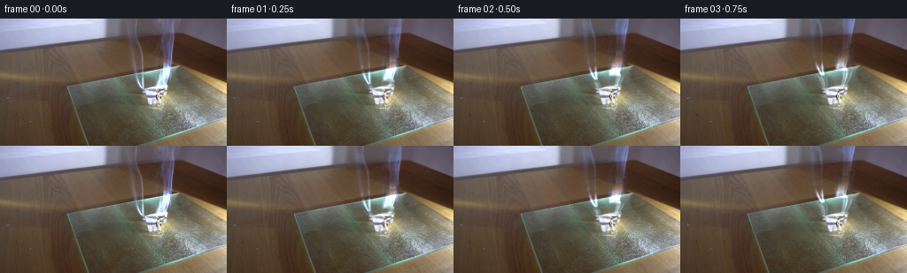
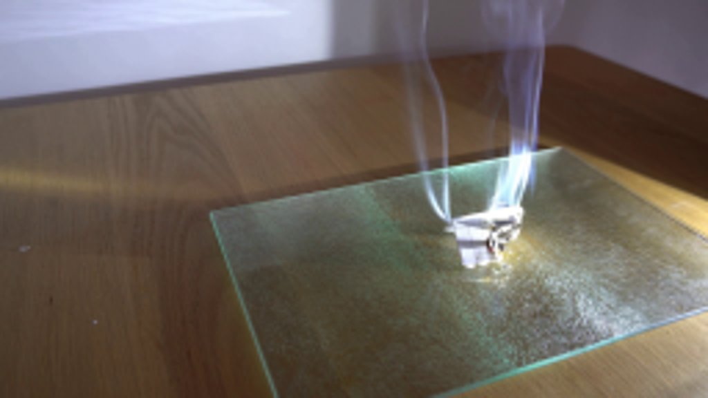
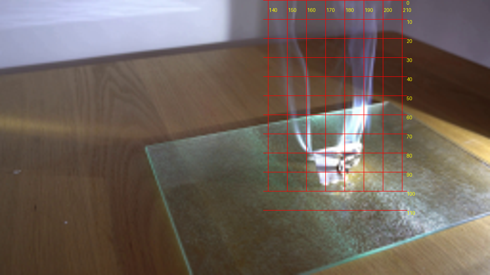
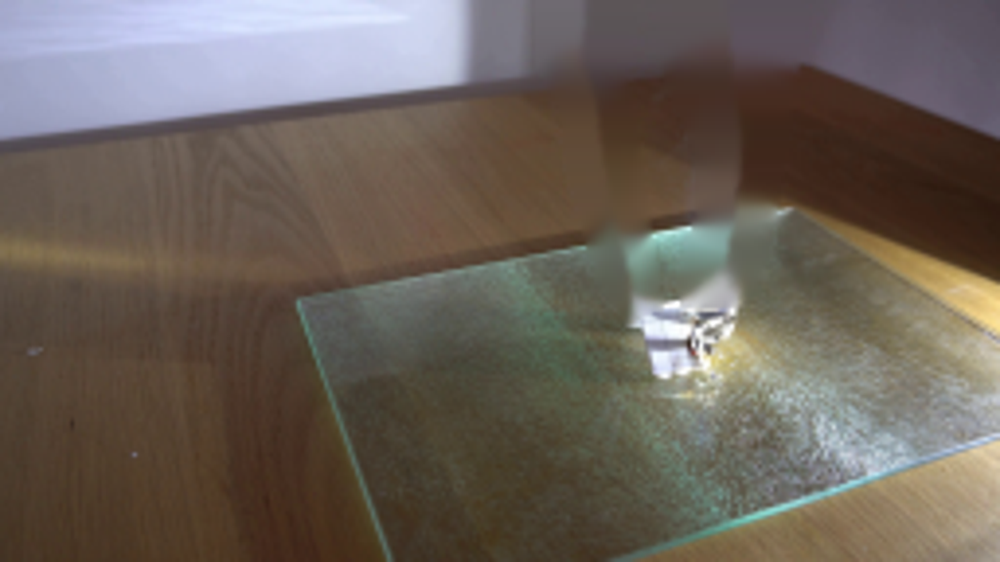
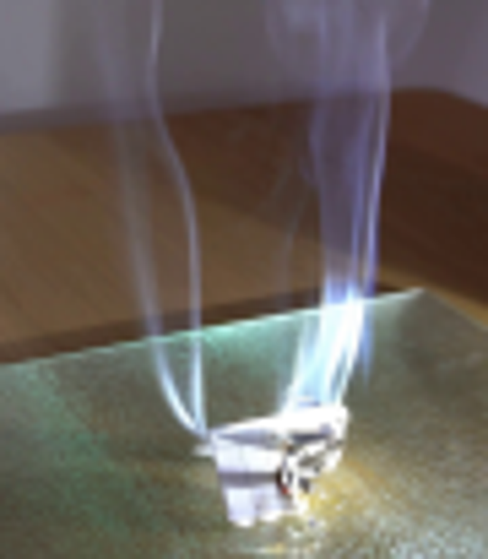
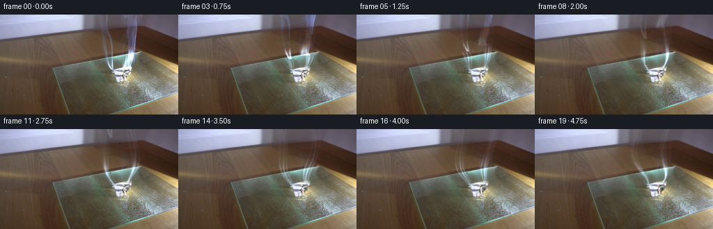
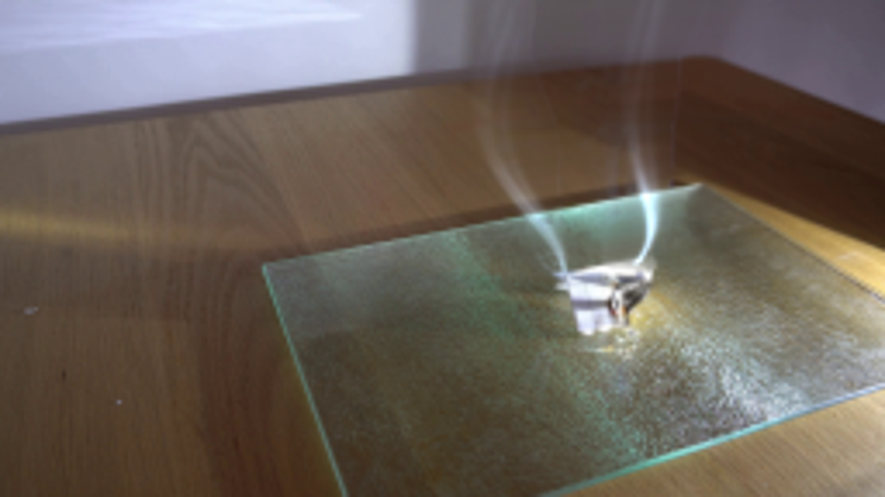
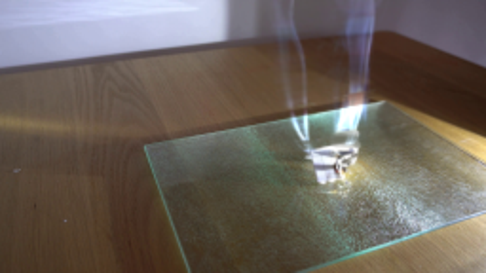

CODING AGENTS AS PIXEL WORLD MODELS
traex/GPT-6.1-Sol · 0139
点击播放 · 原生 RGB 像素
逐轮保存的候选
回放视频、检查图与代码变化。
每份候选均可单独播放。实际图片检查记录在下方工具轨迹中。
候选 01播放与检查图
点击播放 · 原生 RGB 像素


展开代码变化
--- 上一保存版本
+++ 本次保存版本
@@ -0,0 +1,153 @@
+from pathlib import Path
+import numpy as np
+from PIL import Image, ImageDraw, ImageFilter
+import cv2
+import artifact_io
+
+ROOT=Path(__file__).resolve().parent
+W,H=256,144
+S=3
+rng=np.random.default_rng(81)
+original=np.asarray(Image.open(ROOT/'first_frame.png').convert('RGB'))
+
+# Reconstruct the table behind the two translucent smoke streams, preserving
+# the oblique edge of the cutting board in the interpolation coordinates.
+maskim=Image.new('L',(W,H));d=ImageDraw.Draw(maskim)
+d.polygon([(137,0),(161,0),(161,17),(164,34),(165,56),(168,70),(169,78),(164,80),(159,79),(151,67),(146,49),(142,26),(137,17)],fill=255)
+d.polygon([(168,0),(204,0),(204,17),(200,36),(198,53),(194,67),(191,75),(189,77),(175,77),(175,68),(177,54),(177,42),(173,28),(168,17)],fill=255)
+mask=np.asarray(maskim)>0
+bg=original.astype(float).copy()
+# Interpolation follows the glass edge rather than washing it out vertically.
+for y in range(79):
+ for x in range(135,206):
+ if not mask[y,x]: continue
+ slope=-.19 if y>45 else -.073 if y<25 else -.055
+ ends=[]
+ for direction in [-1,1]:
+ xx=x
+ for k in range(1,70):
+ xx=x+direction*k
+ yy=y+slope*(xx-x)
+ iy=int(np.clip(round(yy),0,H-1))
+ if xx<1 or xx>=W-1: break
+ if not mask[iy,xx]:
+ yf=float(np.clip(yy,0,H-1.001)); j=int(yf)
+ val=original[j,xx].astype(float)*(1-yf+j)+original[min(j+1,H-1),xx].astype(float)*(yf-j)
+ ends.append((xx,val));break
+ if len(ends)==2:
+ l,r=ends; q=(x-l[0])/(r[0]-l[0]);bg[y,x]=(1-q)*l[1]+q*r[1]
+# Keep all photographed texture that does not contribute to the pale smoke.
+diff=original.astype(float)-bg
+strength=np.maximum(0, .20*diff[:,:,0]+.25*diff[:,:,1]+.55*diff[:,:,2])
+soft=np.clip(strength/9,0,1)
+soft=cv2.GaussianBlur(soft.astype(np.float32),(0,0),.55)*mask
+residual=np.maximum(diff,0)*soft[:,:,None]
+base=original.astype(float)-residual
+
+hh,ww=H*S,W*S
+Y,X=np.mgrid[0:hh,0:ww].astype(np.float32);Y/=S;X/=S
+base_hi=cv2.resize(base.astype(np.float32),(ww,hh),interpolation=cv2.INTER_CUBIC)
+res_hi=cv2.resize(residual.astype(np.float32),(ww,hh),interpolation=cv2.INTER_LINEAR)
+left_selector=(np.arange(W)[None,:]<173).astype(float)
+left_init=cv2.resize((residual*left_selector[:,:,None]).astype(np.float32),(ww,hh))
+right_init=res_hi-left_init
+
+def sunlight(y):
+ return .18+.90*np.exp(-((y-61)/12.5)**2)+.30*np.exp(-((y-76)/5.0)**2)
+
+# The color of thin smoke follows the fixed sunlight, not moving particles.
+def new_smoke(t, side):
+ y0=79.5 if side==0 else 76.6
+ v=18.0 if side==0 else 23.0
+ a=.20
+ s=np.maximum(y0-Y,0)
+ age=np.log1p(a*s/v)/a
+ emission=t-age
+ # Lateral convection gently folds the laminar sheets as they rise.
+ if side==0:
+ center=163.4-18*(1-np.exp(-s/27))
+ center+= (1-np.exp(-s/15))*(5.8*np.sin(1.55*emission+.6)+3.0*np.sin(2.8*emission+.055*s))
+ flowpower=.74
+ else:
+ center=183.5+7.2*(1-np.exp(-s/15))
+ center+=(1-np.exp(-s/13))*(4.3*np.sin(1.55*emission-.5)+3.1*np.sin(2.7*emission+.037*s+1.5))
+ flowpower=1.0
+ broad=.9+2.1*(1-np.exp(-s/30))
+ curl=np.sin(2.1*emission+.085*s+.4*side)
+ sep=.4+4.0*(1-np.exp(-s/18))
+ sheet=np.zeros((hh,ww),np.float32)
+ for j in range(3):
+ offset=(j-1)*sep + (j-1)*1.4*curl
+ xc=center+offset+.8*np.sin(.17*s+emission*2.7+j*2.3)*(1-np.exp(-s/10))
+ sigma=(.50+.65*(1-np.exp(-s/23)))*(1+.30*np.sin(emission*2.5+.14*s+j))
+ power=[.68,1.0,.55][j]
+ sheet+=power*np.exp(-.5*((X-xc)/sigma)**2)
+ haze=np.exp(-.5*((X-center)/(broad+1.5))**2)*(.15+.06*np.sin(.17*s-1.8*emission))
+ modulation=(.85+.12*np.sin(emission*4+.1*s)+.05*np.sin(emission*8.2-.22*s))
+ # The backlit portion is almost white; the upper strands stay transparent.
+ den=(sheet*.65+haze)*modulation*flowpower
+ den*=np.exp(-s/118)
+ den*=np.clip((y0+.5-Y)/1.5,0,1)
+ lights=sunlight(Y)
+ colors=np.stack([130*lights,164*lights,207*lights],axis=-1)
+ addition=den[:,:,None]*colors
+ # Fresh material supplants the original smoke at the upward-moving front.
+ arrival=np.clip((emission+.13)/.34,0,1)
+ arrival=arrival*arrival*(3-2*arrival)
+ return addition,arrival,age,y0,v,a
+
+# Small-scale char on the folded edge. The white unburned pleats remain intact.
+papermask=Image.new('L',(ww,hh));pd=ImageDraw.Draw(papermask)
+pd.polygon([(int(x*S),int(y*S)) for x,y in [(163,80),(177,78),(188.5,77),(189,82),(185.5,87),(181.5,90),(182,94),(175,97),(168,96),(165,89)]],fill=255)
+pm=np.asarray(papermask,dtype=float)/255
+pm=cv2.GaussianBlur(pm.astype(np.float32),(0,0),.40*S)
+noise=rng.random((hh,ww)).astype(np.float32)
+noise=cv2.GaussianBlur(noise,(0,0),.6*S)
+
+frames=[original.copy()]
+for i in range(1,20):
+ t=i/4
+ out=base_hi.copy()
+ for side,init in enumerate([left_init,right_init]):
+ fresh,arrival,age,y0,v,a=new_smoke(t,side)
+ s=y0-Y
+ old_s=(s+v/a)*np.exp(-a*t)-v/a
+ oy=y0-old_s
+ drift=(1-np.exp(-np.maximum(s,0)/18))*(1.4*np.sin(t*1.9+Y*.06)-1.4*np.sin(Y*.06))
+ mx=(X-drift)*S;my=oy*S
+ adv=cv2.remap(init,mx.astype(np.float32),my.astype(np.float32),cv2.INTER_LINEAR,borderMode=cv2.BORDER_CONSTANT)
+ # An illuminated plume retains its spatial illumination envelope.
+ ratio=np.clip(sunlight(Y)/sunlight(oy),.14,3.7)
+ adv*=ratio[:,:,None]
+ # Original filaments rise out; generated filaments enter continuously below.
+ front=np.clip((t-age+.22)/.55,0,1);front=front*front*(3-2*front)
+ out+=adv*(1-front[:,:,None]) + fresh*arrival[:,:,None]
+ # Slow shrinking/curling of the right, already blackened, burning edge.
+ decay=np.clip(t/4.75,0,1)
+ source=base_hi
+ burnzone=pm*np.clip((X-(181.8-2.8*decay))/3.0,0,1)*np.clip((Y-80)/5.5,0,1)
+ # Char progresses irregularly into the bright right fold.
+ irregular=.72+.5*noise+.17*np.sin(X*2.0+Y*1.8)
+ dark=np.clip(burnzone*decay*irregular*.74,0,.80)
+ out=out*(1-dark[:,:,None])+np.array([32,27,24],np.float32)[None,None,:]*dark[:,:,None]
+ # Minor warping as the tiny charred flap relaxes towards the glass.
+ mapsx=X*S;mapsy=(Y-.65*decay*pm*np.clip((X-175)/12,0,1))*S
+ curled=cv2.remap(out,mapsx.astype(np.float32),mapsy.astype(np.float32),cv2.INTER_LINEAR,borderMode=cv2.BORDER_REFLECT)
+ out=out*(1-pm[:,:,None])+curled*pm[:,:,None]
+ # A small intermittent ember at the lower edge, not an added open blaze.
+ flicker=.55+.26*np.sin(15*t)+.18*np.sin(29*t+1.6)
+ ember=np.exp(-((X-(180.5-.35*decay))/.70)**2-((Y-(89.8+.2*np.sin(9*t)))/1.25)**2)
+ glow=np.exp(-((X-181)/3.5)**2-((Y-91.0)/3.2)**2)*flicker
+ out+=glow[:,:,None]*np.array([5.2,1.2,0])[None,None,:]
+ ealpha=ember*.52*flicker
+ out=out*(1-ealpha[:,:,None])+np.array([249,155,47])[None,None,:]*ealpha[:,:,None]
+ rgb=np.uint8(np.clip(cv2.resize(out,(W,H),interpolation=cv2.INTER_AREA),0,255))
+ # Leave static background outside the demonstration untouched, bit for bit.
+ dynamic=np.asarray(maskim)>0
+ dynamic=cv2.dilate(dynamic.astype(np.uint8),np.ones((5,5),np.uint8))>0
+ dynamic|=((np.indices((H,W))[1]>134)&(np.indices((H,W))[1]<209)&(np.indices((H,W))[0]<80))
+ dynamic|=(cv2.resize(pm,(W,H))>.001)
+ dynamic|=((np.indices((H,W))[1]>175)&(np.indices((H,W))[1]<188)&(np.indices((H,W))[0]>86)&(np.indices((H,W))[0]<98))
+ rgb[~dynamic]=original[~dynamic]
+ frames.append(rgb)
+artifact_io.save(np.stack(frames),ROOT)
候选 02播放与检查图
点击播放 · 原生 RGB 像素

展开代码变化
--- 上一保存版本 +++ 本次保存版本 @@ -53,7 +53,7 @@ right_init=res_hi-left_init def sunlight(y): - return .18+.90*np.exp(-((y-61)/12.5)**2)+.30*np.exp(-((y-76)/5.0)**2) + return .20+.90*np.exp(-((y-61)/12.5)**2)+.48*np.exp(-((y-74)/9.0)**2) # The color of thin smoke follows the fixed sunlight, not moving particles. def new_smoke(t, side): @@ -65,13 +65,13 @@ emission=t-age # Lateral convection gently folds the laminar sheets as they rise. if side==0: - center=163.4-18*(1-np.exp(-s/27)) + center=163.4-16*(1-np.exp(-s/32)) center+= (1-np.exp(-s/15))*(5.8*np.sin(1.55*emission+.6)+3.0*np.sin(2.8*emission+.055*s)) - flowpower=.74 + flowpower=.55 else: center=183.5+7.2*(1-np.exp(-s/15)) center+=(1-np.exp(-s/13))*(4.3*np.sin(1.55*emission-.5)+3.1*np.sin(2.7*emission+.037*s+1.5)) - flowpower=1.0 + flowpower=1.40 broad=.9+2.1*(1-np.exp(-s/30)) curl=np.sin(2.1*emission+.085*s+.4*side) sep=.4+4.0*(1-np.exp(-s/18)) @@ -111,17 +111,14 @@ for side,init in enumerate([left_init,right_init]): fresh,arrival,age,y0,v,a=new_smoke(t,side) s=y0-Y - old_s=(s+v/a)*np.exp(-a*t)-v/a - oy=y0-old_s - drift=(1-np.exp(-np.maximum(s,0)/18))*(1.4*np.sin(t*1.9+Y*.06)-1.4*np.sin(Y*.06)) - mx=(X-drift)*S;my=oy*S + # Smooth initial-condition relaxation: keep the lighting fixed while the + # filaments bend, then replace with the continuously convecting sheets. + amount=np.clip(t/1.5,0,1) + amount=amount*amount*(3-2*amount) + drift=(1-np.exp(-np.maximum(s,0)/18))*(2.2*np.sin(t*1.5+Y*.06)-2.2*np.sin(Y*.06)) + mx=(X-drift)*S;my=Y*S adv=cv2.remap(init,mx.astype(np.float32),my.astype(np.float32),cv2.INTER_LINEAR,borderMode=cv2.BORDER_CONSTANT) - # An illuminated plume retains its spatial illumination envelope. - ratio=np.clip(sunlight(Y)/sunlight(oy),.14,3.7) - adv*=ratio[:,:,None] - # Original filaments rise out; generated filaments enter continuously below. - front=np.clip((t-age+.22)/.55,0,1);front=front*front*(3-2*front) - out+=adv*(1-front[:,:,None]) + fresh*arrival[:,:,None] + out+=adv*(1-amount) + fresh*amount # Slow shrinking/curling of the right, already blackened, burning edge. decay=np.clip(t/4.75,0,1) source=base_hi
候选 03播放与检查图
可观测工具轨迹
实际执行的命令与返回图片。
命令 1exit 0
/bin/bash -lc "ls -la && cat prompt.txt && printf '\\n---RULES---\\n' && cat GENERATION_RULES.md"
命令 2exit 0
/bin/bash -lc "cat artifact_io.py && python - <<'PY'
from PIL import Image
im=Image.open('first_frame.png'); print(im.size)
im.resize((1024,576)).save('.tmp/enlarged.png')
PY"命令 3exit 0
/bin/bash -lc "python - <<'PY'
from PIL import Image,ImageDraw
im=Image.open('first_frame.png').resize((1024,576));d=ImageDraw.Draw(im)
for x in range(140,211,10):
d.line((x*4,0,x*4,400),fill=(255,0,0),width=1);d.text((x*4+2,15),str(x),fill='yellow')
for y in range(0,111,10):
d.line((550,y*4,850,y*4),fill=(255,0,0),width=1);d.text((850,y*4),str(y),fill='yellow')
im.save('.tmp/grid.png')
PY"命令 4exit 0
/bin/bash -lc "python - <<'PY'
import cv2,numpy as np
from PIL import Image,ImageDraw
im=np.array(Image.open('first_frame.png')); mask=Image.new('L',(256,144)); d=ImageDraw.Draw(mask)
d.polygon([(141,0),(157,0),(154,17),(157,28),(161,48),(162,65),(166,77),(169,80),(163,82),(159,78),(154,68),(150,52),(149,35),(143,22)],fill=255)
d.polygon([(171,0),(205,0),(201,16),(197,35),(196,51),(193,65),(189,75),(187,79),(176,79),(176,68),(180,55),(182,41),(179,29),(174,19)],fill=255)
a=np.array(mask); clean=cv2.inpaint(im,a,5,cv2.INPAINT_TELEA)
Image.fromarray(clean).save('.tmp/clean.png');Image.fromarray(clean).resize((1024,576)).save('.tmp/clean_big.png')
PY"命令 5exit 0
/bin/bash -lc "python - <<'PY'
import cv2,numpy as np
from PIL import Image,ImageDraw
im=np.array(Image.open('first_frame.png')); mask=Image.new('L',(256,144)); d=ImageDraw.Draw(mask)
d.polygon([(137,0),(162,0),(160,18),(162,30),(165,51),(168,69),(169,79),(161,82),(156,77),(150,63),(145,42),(143,27),(137,17)],fill=255)
d.polygon([(168,0),(205,0),(204,16),(201,35),(199,51),(196,65),(191,78),(174,78),(174,69),(178,54),(178,40),(174,30),(168,16)],fill=255)
a=np.array(mask)
for mode,name in [(cv2.INPAINT_TELEA,'telea'),(cv2.INPAINT_NS,'ns')]:
clean=cv2.inpaint(im,a,6,mode)
Image.fromarray(clean).resize((1024,576)).save('.tmp/'+name+'.png')
Image.fromarray(a).save('.tmp/mask.png')
PY"命令 6exit 0
/bin/bash -lc "python - <<'PY'
from PIL import Image
import numpy as np
im=np.array(Image.open('first_frame.png'))
for y in [10,20,30,40,50,55,60,65,70,75]:
print(y, [(x,im[y,x].tolist()) for x in range(140,206,5)])
PY"命令 7exit 0
/bin/bash -lc "python - <<'PY'
from PIL import Image
im=Image.open('first_frame.png'); im.crop((125,0,215,103)).resize((540,618)).save('.tmp/smoke_crop.png')
PY"命令 8exit 0
/bin/bash -lc "cat > generate.py <<'PY'
from pathlib import Path
import numpy as np
from PIL import Image, ImageDraw, ImageFilter
import cv2
import artifact_io
ROOT=Path(__file__).resolve().parent
W,H=256,144
S=3
rng=np.random.default_rng(81)
original=np.asarray(Image.open(ROOT/'first_frame.png').convert('RGB'))
# Reconstruct the table behind the two translucent smoke streams, preserving
# the oblique edge of the cutting board in the interpolation coordinates.
maskim=Image.new('L',(W,H));d=ImageDraw.Draw(maskim)
d.polygon([(137,0),(161,0),(161,17),(164,34),(165,56),(168,70),(169,78),(164,80),(159,79),(151,67),(146,49),(142,26),(137,17)],fill=255)
d.polygon([(168,0),(204,0),(204,17),(200,36),(198,53),(194,67),(191,75),(189,77),(175,77),(175,68),(177,54),(177,42),(173,28),(168,17)],fill=255)
mask=np.asarray(maskim)>0
bg=original.astype(float).copy()
# Interpolation follows the glass edge rather than washing it out vertically.
for y in range(79):
for x in range(135,206):
if not mask[y,x]: continue
slope=-.19 if y>45 else -.073 if y<25 else -.055
ends=[]
for direction in [-1,1]:
xx=x
for k in range(1,70):
xx=x+direction*k
yy=y+slope*(xx-x)
iy=int(np.clip(round(yy),0,H-1))
if xx<1 or xx>=W-1: break
if not mask[iy,xx]:
yf=float(np.clip(yy,0,H-1.001)); j=int(yf)
val=original[j,xx].astype(float)*(1-yf+j)+original[min(j+1,H-1),xx].astype(float)*(yf-j)
ends.append((xx,val));break
if len(ends)==2:
l,r=ends; q=(x-l[0])/(r[0]-l[0]);bg[y,x]=(1-q)*l[1]+q*r[1]
# Keep all photographed texture that does not contribute to the pale smoke.
diff=original.astype(float)-bg
strength=np.maximum(0, .20*diff[:,:,0]+.25*diff[:,:,1]+.55*diff[:,:,2])
soft=np.clip(strength/9,0,1)
soft=cv2.GaussianBlur(soft.astype(np.float32),(0,0),.55)*mask
residual=np.maximum(diff,0)*soft[:,:,None]
base=original.astype(float)-residual
hh,ww=H*S,W*S
Y,X=np.mgrid[0:hh,0:ww].astype(np.float32);Y/=S;X/=S
base_hi=cv2.resize(base.astype(np.float32),(ww,hh),interpolation=cv2.INTER_CUBIC)
res_hi=cv2.resize(residual.astype(np.float32),(ww,hh),interpolation=cv2.INTER_LINEAR)
left_selector=(np.arange(W)[None,:]<173).astype(float)
left_init=cv2.resize((residual*left_selector[:,:,None]).astype(np.float32),(ww,hh))
right_init=res_hi-left_init
def sunlight(y):
return .18+.90*np.exp(-((y-61)/12.5)**2)+.30*np.exp(-((y-76)/5.0)**2)
# The color of thin smoke follows the fixed sunlight, not moving particles.
def new_smoke(t, side):
y0=79.5 if side==0 else 76.6
v=18.0 if side==0 else 23.0
a=.20
s=np.maximum(y0-Y,0)
age=np.log1p(a*s/v)/a
emission=t-age
# Lateral convection gently folds the laminar sheets as they rise.
if side==0:
center=163.4-18*(1-np.exp(-s/27))
center+= (1-np.exp(-s/15))*(5.8*np.sin(1.55*emission+.6)+3.0*np.sin(2.8*emission+.055*s))
flowpower=.74
else:
center=183.5+7.2*(1-np.exp(-s/15))
center+=(1-np.exp(-s/13))*(4.3*np.sin(1.55*emission-.5)+3.1*np.sin(2.7*emission+.037*s+1.5))
flowpower=1.0
broad=.9+2.1*(1-np.exp(-s/30))
curl=np.sin(2.1*emission+.085*s+.4*side)
sep=.4+4.0*(1-np.exp(-s/18))
sheet=np.zeros((hh,ww),np.float32)
for j in range(3):
offset=(j-1)*sep + (j-1)*1.4*curl
xc=center+offset+.8*np.sin(.17*s+emission*2.7+j*2.3)*(1-np.exp(-s/10))
sigma=(.50+.65*(1-np.exp(-s/23)))*(1+.30*np.sin(emission*2.5+.14*s+j))
power=[.68,1.0,.55][j]
sheet+=power*np.exp(-.5*((X-xc)/sigma)**2)
haze=np.exp(-.5*((X-center)/(broad+1.5))**2)*(.15+.06*np.sin(.17*s-1.8*emission))
modulation=(.85+.12*np.sin(emission*4+.1*s)+.05*np.sin(emission*8.2-.22*s))
# The backlit portion is almost white; the upper strands stay transparent.
den=(sheet*.65+haze)*modulation*flowpower
den*=np.exp(-s/118)
den*=np.clip((y0+.5-Y)/1.5,0,1)
lights=sunlight(Y)
colors=np.stack([130*lights,164*lights,207*lights],axis=-1)
addition=den[:,:,None]*colors
# Fresh material supplants the original smoke at the upward-moving front.
arrival=np.clip((emission+.13)/.34,0,1)
arrival=arrival*arrival*(3-2*arrival)
return addition,arrival,age,y0,v,a
# Small-scale char on the folded edge. The white unburned pleats remain intact.
papermask=Image.new('L',(ww,hh));pd=ImageDraw.Draw(papermask)
pd.polygon([(int(x*S),int(y*S)) for x,y in [(163,80),(177,78),(188.5,77),(189,82),(185.5,87),(181.5,90),(182,94),(175,97),(168,96),(165,89)]],fill=255)
pm=np.asarray(papermask,dtype=float)/255
pm=cv2.GaussianBlur(pm.astype(np.float32),(0,0),.40*S)
noise=rng.random((hh,ww)).astype(np.float32)
noise=cv2.GaussianBlur(noise,(0,0),.6*S)
frames=[original.copy()]
for i in range(1,20):
t=i/4
out=base_hi.copy()
for side,init in enumerate([left_init,right_init]):
fresh,arrival,age,y0,v,a=new_smoke(t,side)
s=y0-Y
old_s=(s+v/a)*np.exp(-a*t)-v/a
oy=y0-old_s
drift=(1-np.exp(-np.maximum(s,0)/18))*(1.4*np.sin(t*1.9+Y*.06)-1.4*np.sin(Y*.06))
mx=(X-drift)*S;my=oy*S
adv=cv2.remap(init,mx.astype(np.float32),my.astype(np.float32),cv2.INTER_LINEAR,borderMode=cv2.BORDER_CONSTANT)
# An illuminated plume retains its spatial illumination envelope.
ratio=np.clip(sunlight(Y)/sunlight(oy),.14,3.7)
adv*=ratio[:,:,None]
# Original filaments rise out; generated filaments enter continuously below.
front=np.clip((t-age+.22)/.55,0,1);front=front*front*(3-2*front)
out+=adv*(1-front[:,:,None]) + fresh*arrival[:,:,None]
# Slow shrinking/curling of the right, already blackened, burning edge.
decay=np.clip(t/4.75,0,1)
source=base_hi
burnzone=pm*np.clip((X-(181.8-2.8*decay))/3.0,0,1)*np.clip((Y-80)/5.5,0,1)
# Char progresses irregularly into the bright right fold.
irregular=.72+.5*noise+.17*np.sin(X*2.0+Y*1.8)
dark=np.clip(burnzone*decay*irregular*.74,0,.80)
out=out*(1-dark[:,:,None])+np.array([32,27,24],np.float32)[None,None,:]*dark[:,:,None]
# Minor warping as the tiny charred flap relaxes towards the glass.
mapsx=X*S;mapsy=(Y-.65*decay*pm*np.clip((X-175)/12,0,1))*S
curled=cv2.remap(out,mapsx.astype(np.float32),mapsy.astype(np.float32),cv2.INTER_LINEAR,borderMode=cv2.BORDER_REFLECT)
out=out*(1-pm[:,:,None])+curled*pm[:,:,None]
# A small intermittent ember at the lower edge, not an added open blaze.
flicker=.55+.26*np.sin(15*t)+.18*np.sin(29*t+1.6)
ember=np.exp(-((X-(180.5-.35*decay))/.70)**2-((Y-(89.8+.2*np.sin(9*t)))/1.25)**2)
glow=np.exp(-((X-181)/3.5)**2-((Y-91.0)/3.2)**2)*flicker
out+=glow[:,:,None]*np.array([5.2,1.2,0])[None,None,:]
ealpha=ember*.52*flicker
out=out*(1-ealpha[:,:,None])+np.array([249,155,47])[None,None,:]*ealpha[:,:,None]
rgb=np.uint8(np.clip(cv2.resize(out,(W,H),interpolation=cv2.INTER_AREA),0,255))
# Leave static background outside the demonstration untouched, bit for bit.
dynamic=np.asarray(maskim)>0
dynamic=cv2.dilate(dynamic.astype(np.uint8),np.ones((5,5),np.uint8))>0
dynamic|=((np.indices((H,W))[1]>134)&(np.indices((H,W))[1]<209)&(np.indices((H,W))[0]<80))
dynamic|=(cv2.resize(pm,(W,H))>.001)
dynamic|=((np.indices((H,W))[1]>175)&(np.indices((H,W))[1]<188)&(np.indices((H,W))[0]>86)&(np.indices((H,W))[0]<98))
rgb[~dynamic]=original[~dynamic]
frames.append(rgb)
artifact_io.save(np.stack(frames),ROOT)
PY
python generate.py"命令 9exit 0
/bin/bash -lc "python - <<'PY'
from PIL import Image
for i in [1,8,19]:
im=Image.open(f'frames/{i:02d}.png');im.resize((1024,576)).save(f'.tmp/frame_{i}_big.png')
PY"命令 10exit 0
/bin/bash -lc "python - <<'PY'
p='generate.py'
s=open(p).read().replace('center=163.4-18*(1-np.exp(-s/27))','center=163.4-16*(1-np.exp(-s/32))').replace('flowpower=.74','flowpower=.55').replace('flowpower=1.0','flowpower=1.40')
s=s.replace('return .18+.90*np.exp(-((y-61)/12.5)**2)+.30*np.exp(-((y-76)/5.0)**2)','return .20+.90*np.exp(-((y-61)/12.5)**2)+.48*np.exp(-((y-74)/9.0)**2)')
a=s.index(' s=y0-Y\\n old_s=')
b=s.index(' # Slow shrinking/curling',a)
s=s[:a]+''' s=y0-Y
# Smooth initial-condition relaxation: keep the lighting fixed while the
# filaments bend, then replace with the continuously convecting sheets.
amount=np.clip(t/1.5,0,1)
amount=amount*amount*(3-2*amount)
drift=(1-np.exp(-np.maximum(s,0)/18))*(2.2*np.sin(t*1.5+Y*.06)-2.2*np.sin(Y*.06))
mx=(X-drift)*S;my=Y*S
adv=cv2.remap(init,mx.astype(np.float32),my.astype(np.float32),cv2.INTER_LINEAR,borderMode=cv2.BORDER_CONSTANT)
out+=adv*(1-amount) + fresh*amount
''' + s[b:]
open(p,'w').write(s)
PY
python generate.py"命令 11exit 0
/bin/bash -lc "python - <<'PY'
import numpy as np
from PIL import Image
from pathlib import Path
f=np.stack([np.asarray(Image.open(p).convert('RGB')) for p in sorted(Path('frames').glob('*.png'))])
assert f.shape==(20,144,256,3)
assert f.dtype==np.uint8
assert np.array_equal(f[0],np.asarray(Image.open('first_frame.png').convert('RGB')))
assert Path('pixels.npz').is_file()
print('Verified: 20 RGB frames, 256Ã144, frame 00 pixel-identical.')
PY"视觉工具实际返回图片 1

视觉工具实际返回图片 2

视觉工具实际返回图片 3
视觉工具实际返回图片 4

视觉工具实际返回图片 5

视觉工具实际返回图片 6

视觉工具实际返回图片 7

视觉工具实际返回图片 8

视觉工具实际返回图片 9

视觉工具实际返回图片 10

保存候选 3 份；完成命令 11 次；可验证图片返回 10 张。原始 API 响应与完整日志保留在本地。